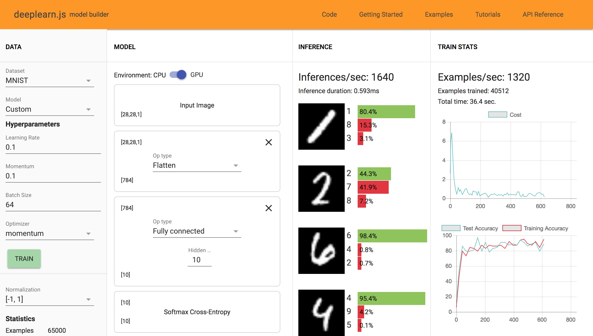
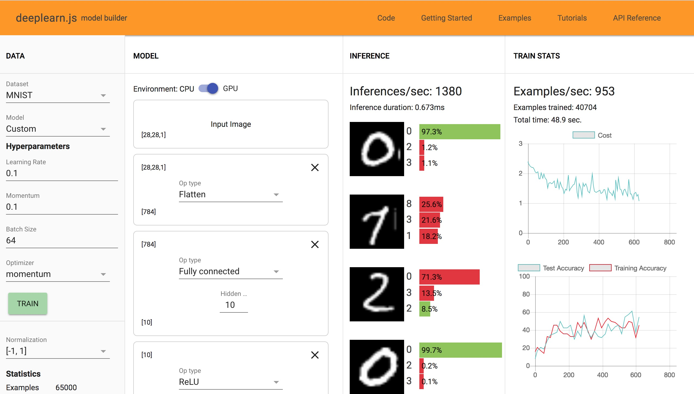
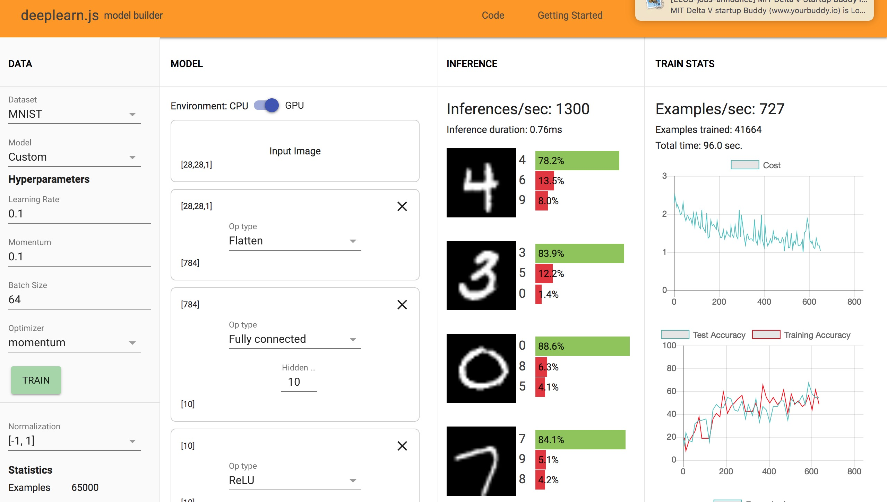
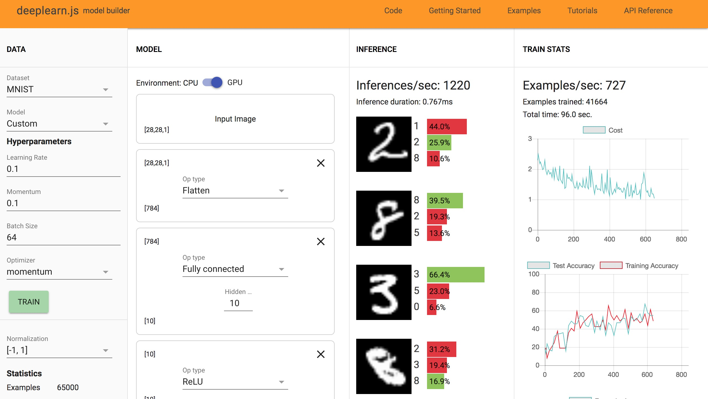
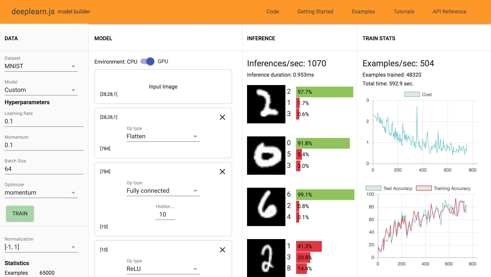

There is no transformation from the dimensions of the input image to something that can be processed by the cross entropy function, yielding an invalid model.
The weights were initialized randomly, and have not been adjusted or trained to classify this image in particular, so I you wouldn't expect great performance from this network in particular. until it's been trained. You'd expect it to be right maybe one in ten times, since there are ten classes.
I observe about 90% or higher accuracy with an outlier here or there. The system performs 1550 inferences per second, and trains 1080 examples per second. With Fashion MNI
I see accuracies anywhere from 5%-90%, a very broad and often wrong range.
The weights for the new layer are probably initialized randomly. Since the sequence of layers is linear, nothing new happens. It's as if we were just multiplying by another random matrix. Also presumably the weights during backpropagation become very small effectively making the points disappear, which is why we get Nan percentages.
The network performs okay at first with a wide range of accuracies from 27% - 80% ish. With 100 neurons I notice a much faster increase in training accuracy and much better performance with a smaller amount of training examples.
It seems that one layer did the trick, since this was a fairly simple dataset and the weights were able to be trained quickly and effectively. You can definitely see some overfitting in the larger layers, since their performance for the same amount of training wasn't so great on other examples.
    The first layer being wider seemed to be more effective on average. I'd assume this has something to do with the backpropagation process and a drawback of the nonlinear activation function we're using
With both datasets I got much worse results across the board. These images are much more complex, and it seems that this network structure is definitely not enough for it.